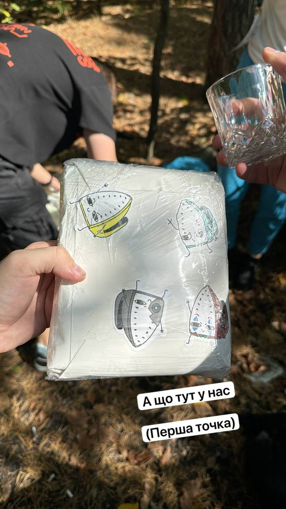
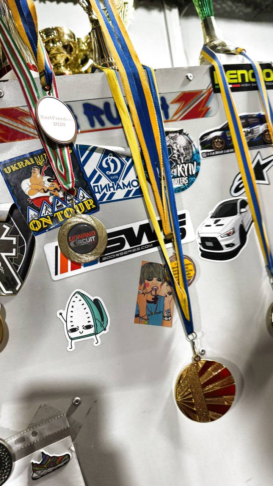

Home |
Iron Around the World |
Events |
Memes |
Telegram
Our Events
Freshmen Night 2024 •
Faculty Day 2025 •
Dynamo •
Polyana Fridays •
Dorm 8
The 91YTYG community doesn't just exist online.
We get together IRL — at clubs, on campus, in dorms.
Here's where the Iron has been in person.
Freshmen Welcome Night 2024
What: Посвята першокурсників — Freshmen Initiation Night
When: Autumn 2024
Where: KPI, Kyiv

The annual freshmen welcome event. New students arrived, the community showed up,
and the Iron was there in spirit and on every phone screen.
A night of introductions, chaos, and first impressions.
Faculty Day 2025 — Club Forsazh
What: День факультету — Faculty Day
When: 2025
Where: Club Forsazh, Kyiv

Faculty Day moved to Club Forsazh — one of Kyiv's well-known venues.
Music, people, energy. Easily one of the most memorable 91YTYG events to date.
Racing event
Where: Kyiv

The Iron showed up to support. An unforgettable outing with the community.
Polyana Fridays
What: Weekly outdoor meetups
When: Every Friday (weather permitting)
Where: Polyana — the green square on KPI campus

Every Friday when the weather allows, the community gathers at the Polyana.
No agenda, no dress code — just good people and the Iron watching over.
See also the travel photos →
Dormitory 8, KPI
Where: KPI Dormitory 8, Igor Sikorsky KPI, Kyiv

The home base. Dormitory 8 at KPI is where many community members live
and where countless ideas, memes, and new Iron variations were born.
Informal, chaotic, always fun.
← Iron Around the World |
Check out our Memes →
91YTYG Meme Community © 2024